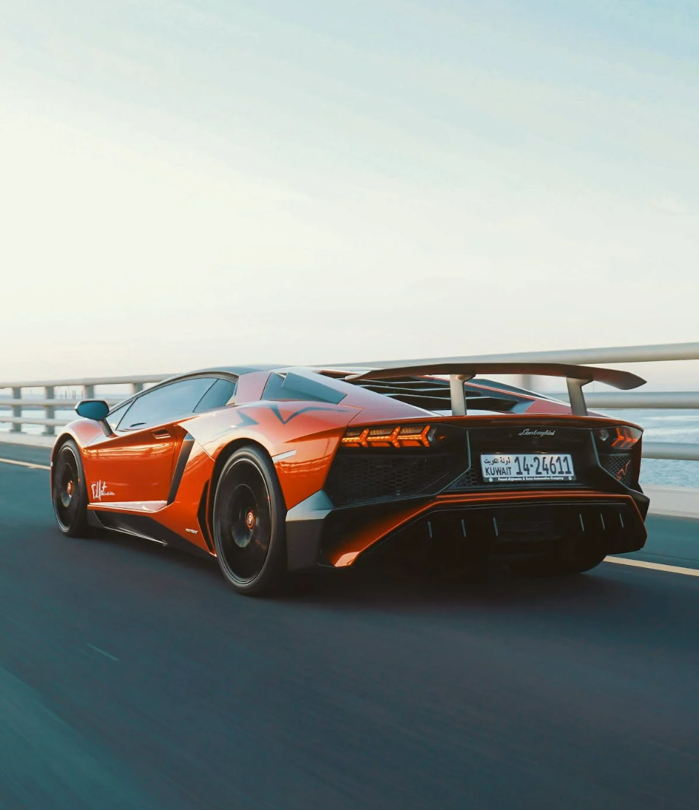

This is my first Website, there are cool pictures and information. Have fun!
 I really like cars but I'm like really broke so now I just look at them online and be like one day. Also I got into a car accident a while back so gonna take a while to get back into driving. I watched Turbo alot as a kid maybe thats why I like cars. OOOH, I like the movie Cars too, except cars 3 was kind of a stretch. I was thinking of getting a motorcycle but people keep saying they're death machines and I've already brushed past death once, lets do it again. Motorcycles are pretty cool too. You can wear those leather gloves and those helmets. They nice.
I don't even know how to change a tire though so mabye I should choose something else to like. Maybe sports. Hahaahha I'm joking no way. I like watching horror movies. Not exactly the best conversation starter though. Like hey, do you enjoy watching horrifying things in HD perfection? Same goes for books, horror not for the general public. Food is a nice starter. I like food. You like food. I like spicy food though. This might not work out, I'll go back to cars.
I also like comedy. The office is a work of art. It will forever be a favorite. Brooklyn nine nine is pretty funny too. Everyone enjoys comedy. Marvel is great but recently it's been falling apart. Maybe I should start watching DC. I am Ironman is going to become I am Batman. Kind of sad but after She Hulk, do we have any other choice?
What else is going on inside your head?